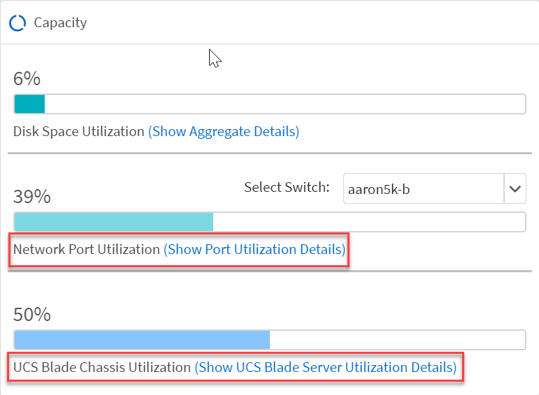
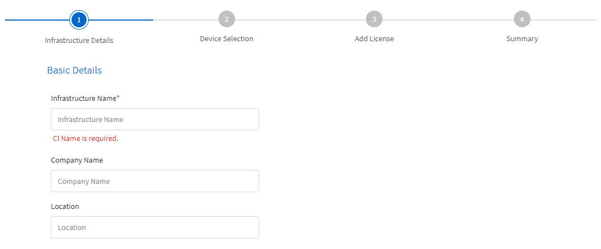

请求文档变更
请求文档变更 在 GitHub 上编辑
在 GitHub 上编辑 提供者指南
提供者指南《 Converged Systems Advisor 中的新增功能》归档
提供者
NetApp 会定期更新 Converged Systems Advisor ，为您提供新功能，增强功能和错误修复。
要确认 CSA 代理支持 FlexPod 组件，请参考 "NetApp 互操作性表工具" IMT
内容
2020 年 4 月 30 日
此版本包含以下增强功能：
Upgrade Advisor
现在，您可以检查 VMware vCenter 和 ONTAP 版本与 Nexus 和 UCS 组件的兼容性。要检查兼容性，请使用信息板中 " 固件互操作性 " 下的 Upgrade Advisor 。您看到的所有版本均受支持。
集群互连交换机
在信息板视图的 * 固件互操作性 * 下添加了 * 集群互连交换机 * 。现在，您可以监控以下型号的 ONTAP 集群互连交换机的可支持性：
-
Cisco Nexus 3132Q-V
-
Cisco Nexus 3232C
-
Cisco Nexus 92300YC

现在，在代理中，您可以在 * 添加设备信息 * 下拉菜单中将集群互连交换机添加为设备。

容量卡增强功能
此外，还添加了指向网络端口利用率和 UCS 刀片服务器利用率的链接，以帮助您监控和扩展 FlexPod 基础架构。在信息板视图中，当您转到容量时，您将看到两个新链接。 
端口利用率链接到网络层中接口的详细信息。
UCS 刀片式服务器利用率链接到计算层中刀片式服务器的详细信息。
系统图警报
现在，您将在系统的图表视图中看到警报，以便更好地监控基础架构。
已修复的问题
此版本已修复以下已知问题：
| 错误 ID | Description |
|---|---|
Nexus 交换机端口状态可能在 Converged Systems Advisor 中显示不正确。 |
-
返回到 [Contents]
2020 年 2 月 3 日
此版本包含以下增强功能：
导航增强功能
-
通过此版本，您可以在 * 查看所有系统 * 中查看所有系统。
-
您可以更轻松地查看和浏览组件层的结构。您可以使用下拉菜单和箭头查看设备。
-
此外，使用痕迹记录在信息板（主页）视图之间导航也会更方便。

聚合详细信息
在信息板视图中，转到容量时，您现在可以看到指向 * 聚合详细信息 * 的链接。您可以使用提供的链接查看有关存储层中聚合的详细信息。


已修复的问题
此版本已修复以下已知问题：
| 错误 ID | Description |
|---|---|
单节点 MetroCluster 不会在集群详细信息页面上的概述和规则摘要中显示 IOXM 扩展模块。 |
-
返回到 [Contents]
2019 年 11 月 7 日

|
将 FlexPod 添加到 Converged Systems Advisor 后，此版本中的所有新功能和增强功能将自动包括在内。按照中的说明进行操作 "入门" 将 FlexPod 作为融合基础架构添加到融合系统顾问中。 |
此版本包含以下新增功能和增强功能：
MetroCluster 感知
现在， Converged Systems Advisor 支持将 MetroCluster FlexPod 的单个站点添加为融合基础架构。分析功能现在可以确定 MetroCluster 两端的运行状况。
NVMe 感知
现在， Converged Systems Advisor 将运行分析来检查 ONTAP 9.4 及更高版本支持的 NVMe 协议的配置。
改进了互操作性功能
Converged Systems Advisor 提供了一个更新的互操作性卡，此卡将链接到一个弹出窗口，其中显示了每个组件支持的当前，最近和最新版本。弹出窗口中添加了一个新报告，用于显示每个组件层的个性化互操作性报告。
-
返回到 [Contents]
2019 年 7 月 24 日
此版本包含以下新增功能和增强功能：
支持 FlexPod 中的 Cisco ACI
现在， Converged Systems Advisor 可通过 Cisco ACI 网络支持 FlexPod 设计。我们将评估 FlexPod 中所有设备的支持和配置情况，即使连接到其他 FlexPod 设备的两个动态确定的叶交换机也是如此。
支持在一个 FlexPod 中使用多个集群
现在， Converged Systems Advisor 可在一个 FlexPod 中支持多个集群。所有集群都会处理 Storage ONTAP 规则，所有集群都会反映在系统图中。
-
返回到 [Contents]
2019 年 4 月 25 日
此版本包含以下新增功能和增强功能：
自动解决失败的规则
现在， Converged Systems Advisor 可以自动解决发生原因某些规则失败的问题。重新启动代理会自动启用此功能。
显示禁止的规则
现在，您可以在 Converged Systems Advisor 中显示禁止规则的全局列表，并从该列表中重新启用禁止规则的警报。
已修复的问题
此版本已修复以下已知问题：
| 错误 ID | Description |
|---|---|
对于融合基础架构，可能不会显示系统图图像 |
|
Storage Cluster 效率值显示不正确 |
|
Nexus 交换机端口状态可能显示不正确 |
|
空间预留状态显示不正确 |
-
返回到 [Contents]
2019 年 3 月 28 日
此版本已修复以下已知问题：
| 错误 ID | Description |
|---|---|
CSA 中显示的精简配置状态不正确 |
|
磁盘空间利用率百分比在 CSA 中显示不正确 |
|
在 Nexus 交换机中映射到 VLAN 的接口可能与 CSA 中的实际设备输出不匹配 |
|
机架式服务器的电源信息可能会在 CSA 中显示不正确 |
-
返回到 [Contents]
2019 年 1 月 17 日
此版本包含以下新增功能和增强功能：
支持新的 FlexPod 设备
Converged Systems Advisor 现在支持以下 FlexPod 设备：
-
Cisco UCS C 系列机架式服务器
-
Nexus 3000 系列交换机
-
直接连接到 NetApp 控制器的 Cisco UCS 交换机
有关受支持设备的完整列表，请参见 "NetApp 互操作性表工具"。
有关主机和虚拟机的详细信息
Converged Systems Advisor 现在可提供有关虚拟化环境的更多信息。您可以向下钻取以查看有关各个主机和虚拟机的信息，包括图表，清单列表和规则摘要。

简化添加基础架构的体验
现在，向 Converged Systems Advisor 添加基础架构变得更加简单。通过门户，您可以分步输入信息：

使用文件导入设备
现在，您可以通过导入包含每个设备相关信息的文件来配置 Converged Systems Advisor 代理，以发现您的 FlexPod 基础架构。导入设备是手动逐个添加每个设备的替代方法。

与 NetApp Active IQ 集成
现在，您可以从 Converged Systems Advisor 启动 Active IQ 。以下示例显示了存储页面中提供的 Active IQ 链接：

已修复的问题
此版本已修复以下已知问题：
| 错误 ID | Description |
|---|---|
4671 |
在浏览 Converged Systems Advisor 门户时， Firefox 可能会停止响应。 |
4500 |
超时间间隔到期后， Converged Systems Advisor 门户不会注销您。您仍保持登录状态，但无法看到 FlexPod 系统。 |
2794 |
尽管虚拟机上未安装 VMware 工具，但 Converged Systems Advisor 对名为 "VMware tools check" 的规则显示 "Pass" 。 |
-
返回到 [Contents]
2018 年 9 月 13 日
此版本的 Converged Systems Advisor 包含以下新功能：
-
全新的用户界面和用户体验，可简化客户的 FlexPod 操作
-
VMware 虚拟化的运行状况和最佳实践验证
-
支持具有扩展光纤通道支持的 Cisco MDS 交换机